Product Documentation
Purpose, modules, functions, evidence model, safety boundaries and end-to-end operating workflows.
Screenshots are from the actual desktop application using real translationCore Ruth/Psalms data. The AI Final Review screenshot uses deterministic illustrative AI output so documentation can show the populated review interface without a paid API call.
1. Product purpose and operating principle
translationCore AI Bridge is a Windows desktop companion for translationCore projects. Its purpose is to increase the speed and quality of Bible translation checking by moving repetitive technical work to AI while keeping translation decisions under human authority.
Reads resources
Locates source text
Preselects target tokens
Checks alignment and meaning
Assembles evidence
Prioritizes problems
Inspects evidence
Accepts or rejects findings
Edits Scripture
Decides terminology
Approves TN/TW and alignment
Gives final approval
Primary users
- Bible translators working from Hebrew/Greek into Tamil or another target language.
- Translation reviewers and consultants checking accuracy, completeness, terminology and language quality.
- Project administrators who need audit history, completion state, reports and safe recovery.
Project types supported
- Fresh: little or no alignment/check history.
- Partially completed: mixed approved, unfinished, invalidated and edited work.
- Previously reviewed: human-approved work is preserved as higher-priority evidence; AI audits without silently overwriting it.
2. How the product works
Scripture · alignmentData · checkData · indexes · Git
TN · TA · TW · TWL · UHB/UGNT · reference Bible
alignment · TN/TW selection · QA · evidence · confidence
Accept · Edit · Needs Discussion · Reject
backup · validation · journal · rollback · audit
Evidence priority
- Current human-approved project work.
- Human-edited alignment/selections and approved terminology.
- Existing Word Alignment and previous TN/TW decisions.
- Project-pinned original-language resources and morphology.
- Translation Notes / Translation Academy / Translation Words / Translation Words Links.
- Tamil contextual analysis.
- English reference translation as secondary support only.
- AI inference as the fallback, never the highest authority.
3. Installation and first start
Recommended end-user installation
- Install the Setup EXE built from the production package.
- No separate Python, Tk, Pillow, PyInstaller or Inno Setup installation is required on the end-user computer.
- Git for Windows is optional; without it, only Git checkpoint/history functions are unavailable.
- Start translationCore AI Bridge.
- Browse to the translationCore data folder containing
projectsandresources. - Open Settings & Log, enter the OpenAI API key, choose the reviewer name and model-routing profile, save settings, then test the API connection.
First project load
The app discovers compatible projects, their chapter/verse inventory, current translationCore check states, resource versions, Word Alignment state, cached AI reviews and companion review history. Opening/scanning a project is intended to remain read-only until a human action actually needs to persist state.
4. Dashboard - project analysis and exception-first review
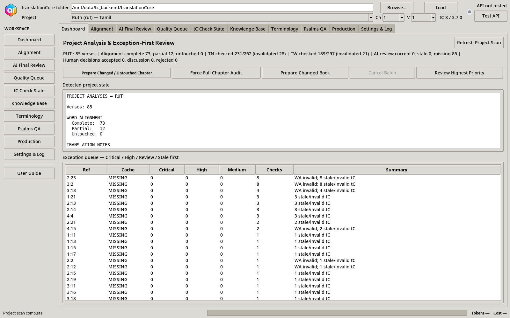
The Dashboard is the normal starting point for a working session.
Main functions
- Refresh Project Scan: re-evaluates current project state.
- Prepare Changed / Untouched Chapter: sends only work that is new or stale through AI preparation.
- Force Full Chapter Audit: deliberately re-runs every numbered verse in the selected chapter.
- Prepare Changed Book: works across chapters using dependency fingerprints and cache status.
- Cancel Batch: safely stops after the current operation completes.
- Review Highest Priority: opens the top Critical/High/stale exception first.
Typical classifications
Untouched, AI-prepared, partially worked, human-approved, human-edited, needs discussion, AI-rejected, or stale after a dependent change.
5. Alignment workspace
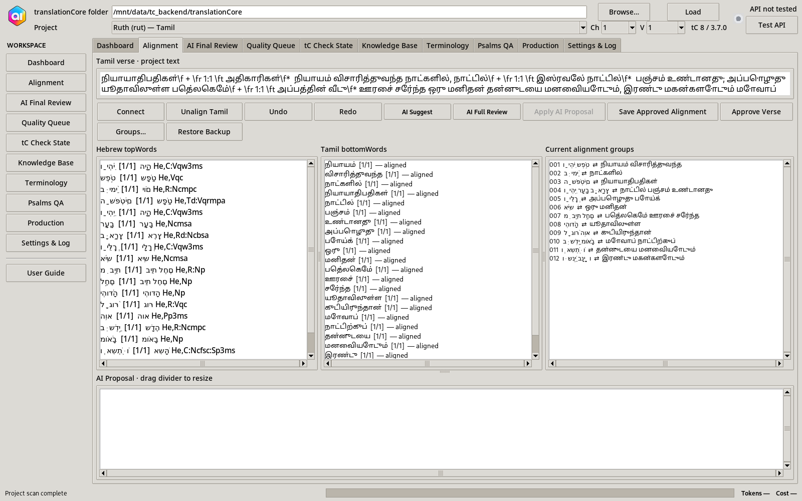
Purpose
Connect existing Tamil bottomWords to the appropriate Hebrew topWords without allowing AI to fabricate Scripture tokens.
Supported alignment relationships
- 1 Hebrew → 1 Tamil
- 1 Hebrew → many Tamil
- many Hebrew → 1 Tamil
- many Hebrew → many Tamil
- temporarily unaligned Hebrew or Tamil tokens
Functions
- Connect and Unalign Tamil for manual reviewer control.
- Undo / Redo for alignment editing.
- AI Suggest Alignment creates a proposal using existing token IDs only.
- Apply AI Proposal moves the validated suggestion into the editable in-memory alignment; it still is not project-approved.
- Save Approved Alignment performs the human-approved translationCore write and synchronizes Word Alignment completion state.
- Restore Backup supports recovery from a previously saved alignment state.
6. Responsive and small-screen behavior
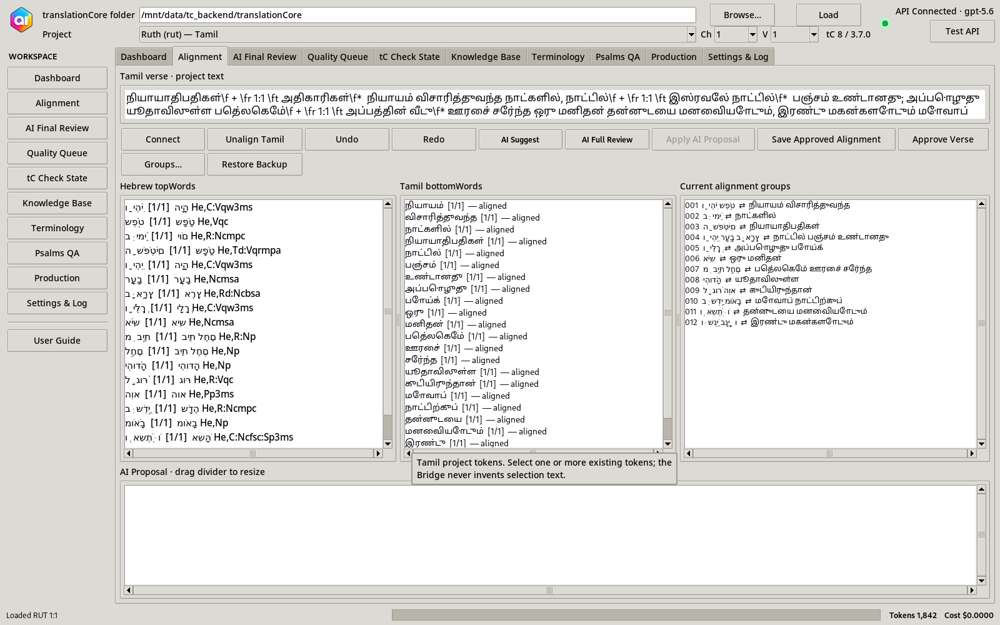
- Supported minimum window: 760×560.
- Sidebar collapses on smaller widths to protect working space.
- Current Alignment Groups moves below the token viewers instead of disappearing.
- Horizontal scrolling is available for token/group tables, AI Proposal, tool/results tables and evidence.
- Alignment action buttons remain outside the draggable AI Proposal divider, so dragging cannot hide them.
- Progress, API tokens and estimated cost remain in the permanent bottom status bar.
- Tooltips explain important controls and status indicators.
7. AI Final Review - evidence-backed verse review
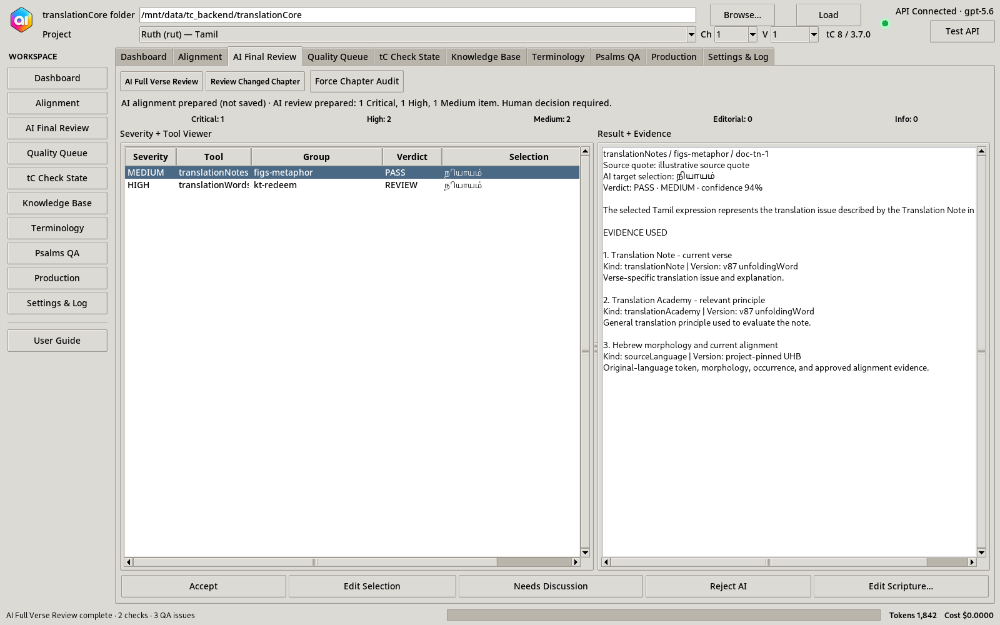
What AI reads
- Current Hebrew verse, source tokens, morphology, lemmas and occurrences.
- Current Tamil verse and current alignment.
- Relevant Translation Notes and associated Translation Academy principles.
- Translation Words articles and Translation Words Links occurrences.
- Previous approved terminology and reviewer decisions.
- Secondary English reference where available.
What AI prepares
- Likely Tamil token selection for each TN/TW check.
- Verdict, severity, confidence and rationale.
- Possible correction when a real issue is identified.
- Whole-verse QA findings: accuracy, completeness, terminology, grammar relationships, Tamil quality and alignment concerns.
- Evidence provenance showing which resources were used.
Human actions
Accept, Edit Selection, Needs Discussion, Reject AI, or Edit Scripture. Accepting a TN/TW result can synchronize the approved selection to translationCore; Discussion/Reject remain non-completion states.
{callout('Documentation screenshot','The populated AI result shown here is deterministic illustrative output generated only for the manual. It demonstrates the interface without making a real paid API request.','info')}8. Quality Queue and human finding decisions
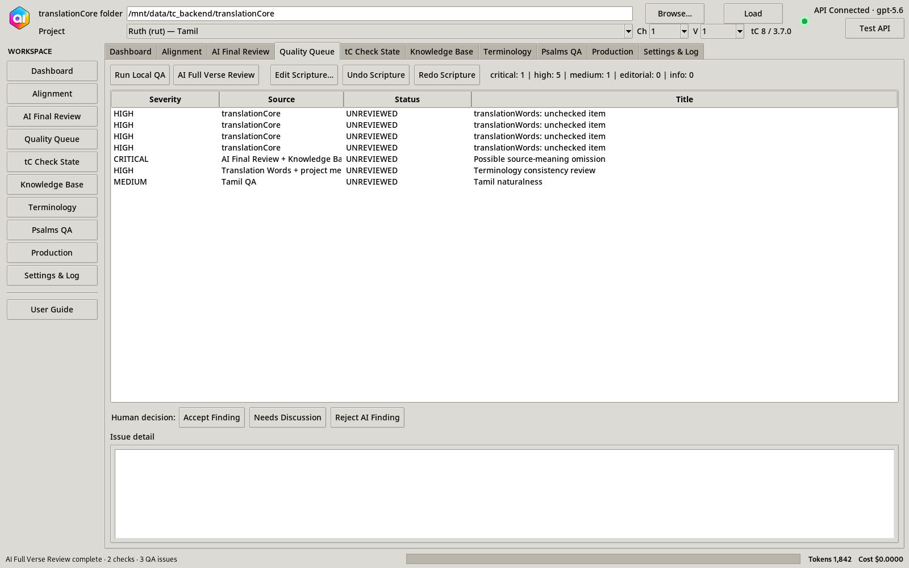
Severity model
| Severity | Examples |
|---|---|
| Critical | Material omission/addition, changed meaning, severe source-transfer error. |
| High | Wrong participant, negation, number/person, major terminology or alignment issue. |
| Medium | Ambiguity, meaning-relevant grammar, contextual terminology question. |
| Editorial | Spelling, Sandhi, punctuation, style/naturalness. |
Human finding workflow
Select a finding → inspect evidence → Accept Finding, Needs Discussion, Reject Finding, or Edit Scripture. Current decision state and append-only audit history are maintained separately.
QA areas
Accuracy, missing/added/wrong meaning, participants/referents, negation, grammatical features, alignment integrity, terminology, Tamil spelling/grammar/Sandhi/punctuation/naturalness, USFM structure and specialized checks.
9. translationCore check state
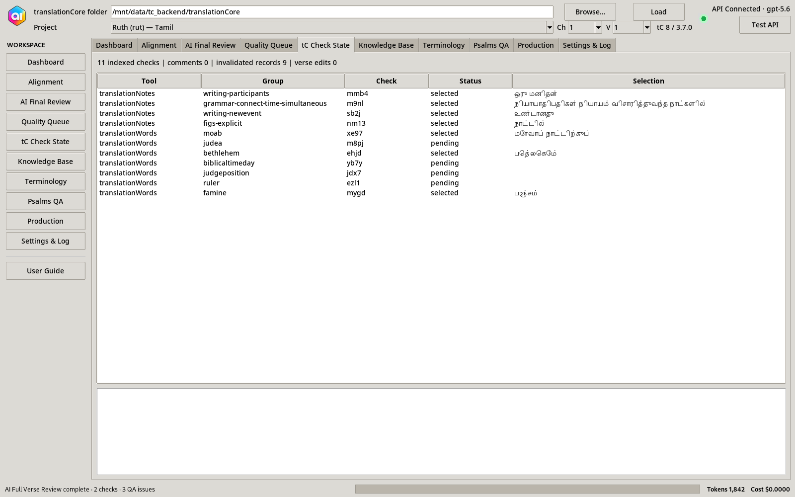
This workspace shows existing Translation Notes/Words checking state, including selections, invalidations, comments, verse edits and whether a check is pending/current/stale.
Why it matters
A translationCore check being completed means a human has dealt with that check by selecting the relevant target-language expression or recording Nothing to Select. AI preparation alone never marks the check human-complete.
Stale lifecycle
10. Knowledge Base and evidence provenance
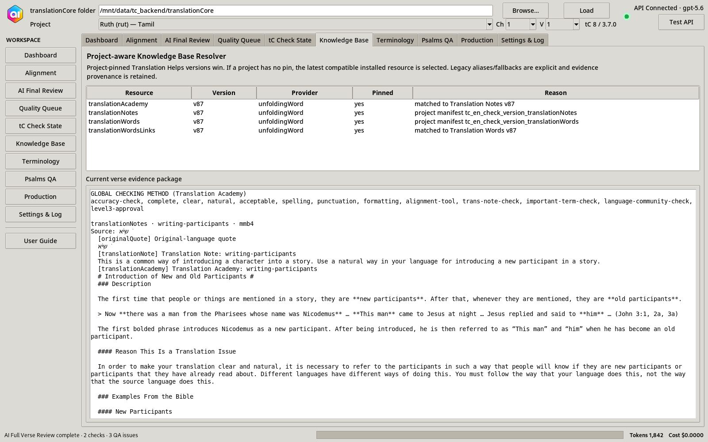
Knowledge layers
- Project text, manifest, checkData and history.
- Original language: UHB/UGNT token, lemma, morphology and occurrence.
- Existing alignment and approved project decisions.
- Translation Notes.
- Translation Words + Translation Words Links.
- Translation Academy methodology.
- Project terminology/reviewer knowledge.
- Reference translation as secondary support.
Version resolver
Project-pinned resource versions win. Where a project does not explicitly pin a help version, the resolver uses a compatible installed resource and records the fallback. Legacy/renamed identifiers are resolved through controlled mappings before AI inference is considered.
Provenance
Evidence records resource kind, provider/version and content hash so reviewers can trace why an AI conclusion was produced and so resource upgrades can invalidate only affected cached reviews.
11. Terminology Decision Center and book analytics
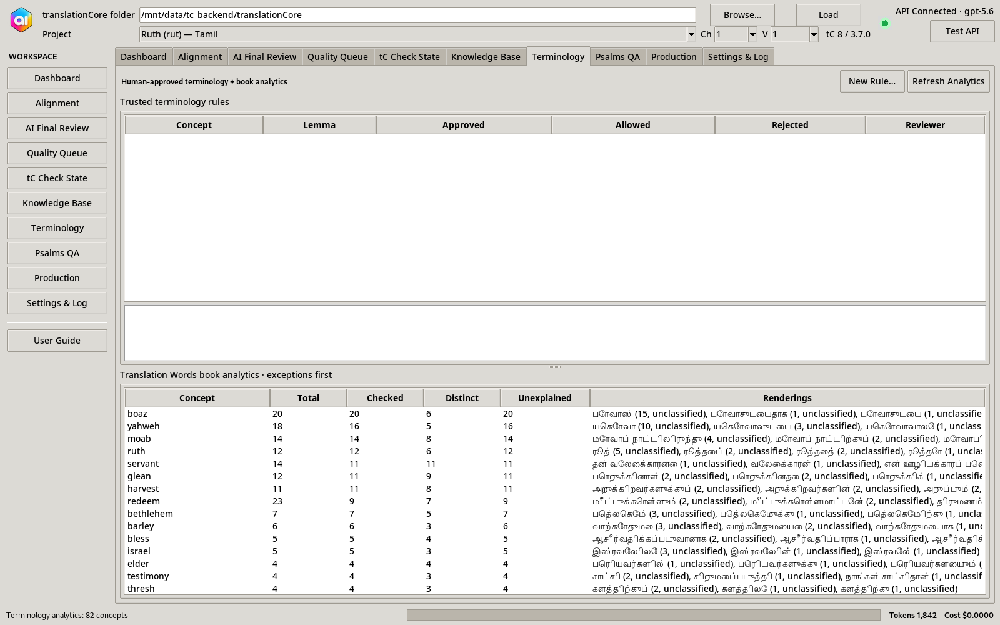
Human terminology rules
Record an approved rendering, allowed contextual alternatives, rejected renderings, reviewer rationale and scope. These rules become trusted project knowledge for later AI reviews.
Book-level analytics
- Concept/lemma occurrence counts.
- Current Tamil selections and rendering frequencies.
- Checked versus unchecked occurrences.
- Direct/unexplained variations.
- Comparison against human-approved terminology rules.
12. Psalms Structure & Parallelism QA
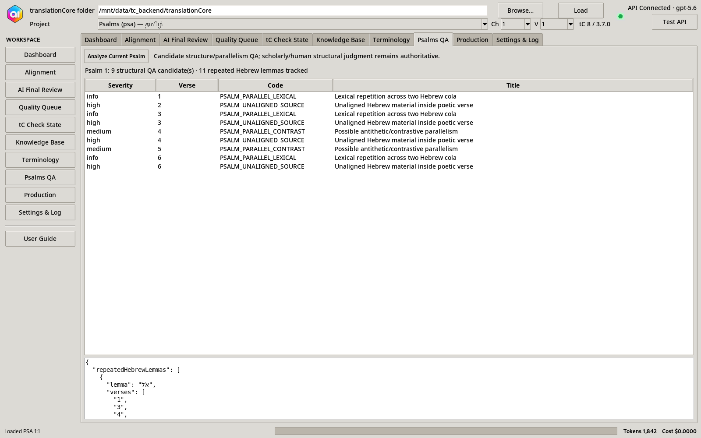
Candidate checks
- Hebrew cantillation/colon clues.
- Repeated Hebrew lemmas and lexical patterns.
- Contrast/negation patterns.
- Possible line relationships and compression.
- Alignment density and unaligned source material.
- Tamil structural cues.
The output is intentionally labelled candidate QA. AI and deterministic rules prepare evidence; final structural/parallelism judgment remains with the translator/exegete.
13. Production workspace
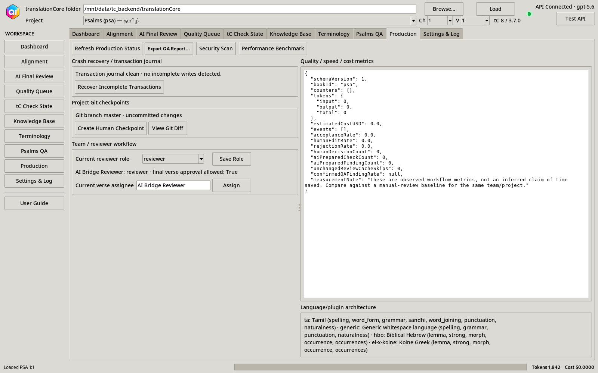
Crash recovery
Multi-file write transactions use a durable journal with pre-write backups and explicit prepared/writing/committed/rollback states. If a write is interrupted, the app can detect an incomplete transaction and conservatively restore the pre-write state.
Git
View repository status/diff/history and create explicit human checkpoints. Git subprocesses are hidden/no-console on Windows so project switching does not flash a Command Prompt window.
Team workflow
Reviewer roles, verse assignments and approval policy can distinguish translator, reviewer, consultant and administrator responsibilities.
Reports
Export publication QA as print-friendly HTML and JSON plus QA/exception/terminology CSVs and discussion/audit information.
Metrics
Tracks observed AI preparation, cache skips, token/cost totals and human accept/edit/reject/discussion behavior. The product does not invent unsupported claims of “time saved”; efficiency must be measured from actual use.
14. Settings, security, model routing and logs
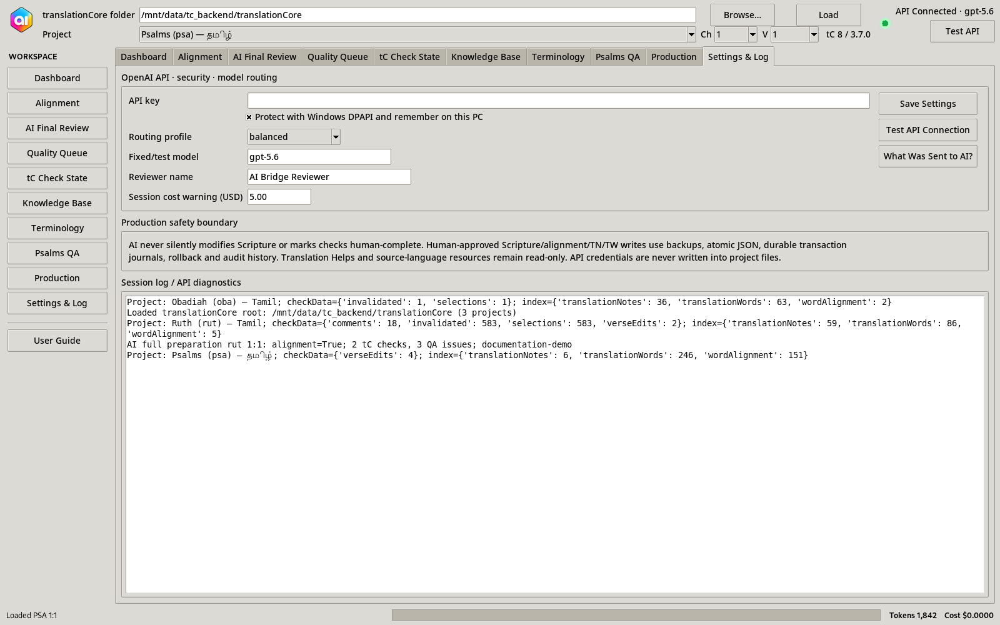
Routing profiles
- Economy: prefer lower-cost models for routine preparation.
- Balanced: use economical models for straightforward work and escalate harder/high-severity cases.
- Quality: prioritize stronger reasoning.
- Fixed: use the explicitly configured model.
Status bar
Every long-running job shows work status and progress. AI operations update token usage and estimated cost. Green API status means a successful authenticated probe or AI request, not merely that an API-key string exists.
Privacy controls
“What Was Sent to AI?” exposes the classes of data assembled for the request. Unrelated project files are not required for a single verse review, and source/Translation Helps files remain read-only.
15. End-to-end product use cases
Use case A - Fresh project
- Load translationCore data folder.
- Dashboard classifies the project and finds untouched work.
- Run Prepare Changed / Untouched Chapter.
- AI prepares missing alignment, TN/TW selections, QA findings and evidence.
- Reviewer opens Critical/High exceptions first.
- Reviewer accepts/edits/rejects findings and alignment.
- Human-approved TN/TW and alignment state is synchronized to translationCore.
- Reviewer performs final verse approval.
Use case B - Partially completed project
- Load project with existing human work.
- Dashboard identifies current, incomplete, invalidated and stale items.
- Changed-only preparation skips current cached work.
- Existing approved alignment/selections/terminology are used as stronger evidence than AI inference.
- Reviewer deals primarily with exceptions and gaps.
Use case C - Translation Note check
- AI locates the quoted source occurrence.
- Reads morphology, alignment, TN explanation and relevant TA principle.
- Locates/preselects the corresponding Tamil token(s).
- Evaluates whether Tamil handles the TN issue.
- Presents rationale, confidence and evidence.
- Human Accept / Edit Selection / Needs Discussion / Reject AI.
- Accepted selection is synchronized using the real translationCore checkData/index lifecycle.
Use case D - Translation Word / terminology check
- Resolve TW concept and TWL original-language occurrence.
- Read current Tamil selection and all approved book renderings.
- Compare against human terminology rules.
- Flag unexplained variation while allowing contextually justified alternatives.
- Human makes the terminology decision.
Use case E - Human Scripture correction
- AI or deterministic QA identifies a real translation concern.
- Reviewer opens Scripture correction workspace.
- Reviews current text, proposed correction, evidence and before/after diff.
- Only the human applies the edit.
- Transaction backup/journal protects the write.
- Alignment, affected TN/TW reviews, cached AI result and final approval become stale as required.
- AI prepares changed work again; human re-approves.
Use case F - Chapter batch / exception-first review
- Prepare changed chapter or full chapter audit.
- Each verse reports progress; one failed verse does not terminate the whole chapter.
- Current unchanged cached verses can be skipped.
- Dashboard summarizes failed/skipped/issues.
- Reviewer starts with Critical/High/stale items rather than reading every routine pass.
Use case G - Recovery after interruption
- Application starts and detects incomplete journal entries.
- Reviewer chooses recovery.
- Pre-write backups restore a coherent state.
- Project can be reloaded and affected work re-reviewed.
Use case H - Team/consultant review
- Set reviewer identity/role.
- Assign verse to a team member.
- Translator edits and prepares work.
- Reviewer/consultant examines evidence and unresolved discussions.
- Role-gated final approval records the final human decision.
16. What the product reads and writes
Read-only / source evidence
- Installed Translation Helps and source-language resources.
- Imported USFM/SFM resource source files.
- Reference Bible resources.
Human-approved translationCore writes
- Target chapter JSON for explicit human Scripture edits.
.apps/translationCore/alignmentData/…- Word Alignment
completed/invalidstate. - TN/TW
checkData/selections,invalidated,comments,verseEdits. - Matching materialized TN/TW indexes.
AI Bridge companion data
AI cache, human decisions/audit, terminology rules, team assignments, metrics, transaction journal, reports and related companion state live under .apps/translationCoreAI/ and are created lazily when persistence is needed.
17. Changed-only dependency engine, cache and model cost
Each verse review can be fingerprinted from components such as Scripture, alignment, tC check state, Translation Helps/source-resource versions, terminology rules, manifest, prompt/schema version and model policy.
- If none of the dependencies changed, the cached review can remain CURRENT.
- If an important dependency changed, it becomes STALE with a reason.
- Batch preparation can skip current reviews, reducing API calls and reviewer workload.
- Model routing can escalate ambiguous/high-severity work while using economical models for mechanical tasks.
18. Status, states and reviewer interpretation
| State | Meaning |
|---|---|
| NOT ANALYZED | No AI preparation exists for the current state. |
| AI PROCESSING | A background AI/retrieval operation is running. |
| AI PREPARED | Proposal/evidence exists; it is not human approval. |
| HUMAN ACCEPTED | Reviewer accepted the item. |
| NEEDS DISCUSSION | Not complete; requires consultation/resolution. |
| AI REJECTED | Reviewer rejected the AI conclusion. |
| STALE / RECHECK | A dependency changed after the earlier review. |
19. Reports and publication QA
The reporting layer is designed to answer both “what remains?” and “why was this accepted?”
- Critical/High unresolved findings.
- Stale and invalidated work.
- Terminology exceptions.
- Alignment and TN/TW completion state.
- Discussion items.
- Knowledge Base provenance.
- Reviewer/team state and metrics.
- Export to print-friendly HTML, JSON and CSV artifacts.
Publication readiness remains advisory. Human/organizational sign-off is the final authority.
20. Troubleshooting and safe operating practices
AI button appears inactive
Check the bottom status bar first. Long jobs immediately report a phase/progress state. Test the API connection in Settings. Batch failures are recorded per verse and should not stop the remainder of a chapter.
Brief Command Prompt window appears
Current Git helper subprocesses are configured hidden/no-console on Windows. If a console flash still appears, record which navigation action caused it and provide the session log.
Project changed outside the Bridge
Stale-file guards prevent silently overwriting a file that has changed since it was loaded. Reload/review the current state.
Interrupted write
Use Production → crash recovery. Do not manually delete transaction/backups before inspecting them.
AI proposes a token that does not exist
The proposal validator rejects fabricated or duplicate token IDs. The reviewer should rerun or make a manual selection.
Windows certification
Production certification must use the disposable-clone workflow. Never run write-capable destructive tests directly against live translation projects.
21. Measuring whether the product is helping
The application should be evaluated by observed workflow quality, not by feature count.
- AI TN/TW selection acceptance rate.
- Human-edited selection rate.
- Rejected AI / false-positive rate.
- Confirmed Critical/High findings.
- Cache skip rate.
- Tokens and cost by chapter/book.
- Unresolved discussion count.
- Terminology inconsistencies found/resolved.
- Checks completed per reviewer session/hour (when measured externally).
22. Branding and future-release logo
The logo supplied on 13 August 2026 is the designated application identity for future releases. This documentation package includes the original source image plus generated Windows and UI icon assets.
brand/official-app-logo-source.pngbrand/app_icon.pngbrand/app_icon_48.pngbrand/app_icon.icoFor a future source release, copy these assets into the app's assets/ folder or run the existing set_app_icon.bat workflow, then rebuild the EXE/installer so Windows embeds the new icon.
23. Module reference
| Module/workspace | Main responsibility |
|---|---|
| Dashboard | Project scan, changed/untouched preparation, exception-first review. |
| Alignment | Hebrew↔Tamil alignment, AI proposal, manual edit, approved tC save. |
| AI Final Review | TN/TW preselection, whole-verse QA, confidence and evidence. |
| Quality Queue | Prioritized deterministic/AI findings and human finding decisions. |
| tC Check State | Existing selections, invalidations, comments, verse edits, stale status. |
| Knowledge Base | Project-aware TN/TA/TW/TWL/source/reference evidence and provenance. |
| Terminology | Human rules and book-level key-term analytics. |
| Psalms QA | Poetic structure/parallelism candidates and source/target structural evidence. |
| Production | Recovery, Git, team workflow, metrics, reports, security, benchmark, plugins. |
| Settings & Log | API credentials, routing, cost warning, reviewer identity, privacy, diagnostics. |
Core code subsystems
tc_project.py- translationCore adapter and safe writers.knowledge_base.py- Translation Helps/source resolver and provenance.alignment_engine.py- inventory, proposal validation and alignment edits.ai_client.py- structured OpenAI Responses API operations.cache_engine.py- dependency fingerprints/staleness.transaction_journal.py- crash-safe multi-file transactions.analytics.py- terminology and exception analytics.model_router.py- model policy/cost routing.psalms_qa.py- Psalms candidate QA.reporting.py- publication QA exports.team.py,metrics.py,security.py,plugins.py- production support systems.